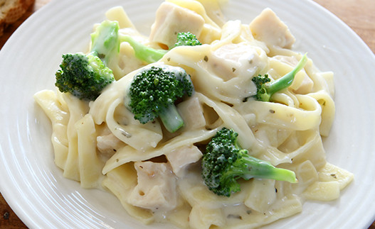

Broccoli Chicken Alfredo

- Prep Time: 20 mins
- Total Time: 40 mins
- Serves: 6
Ingredients
- 1/4 cup Panko Bread Crumbs
- 2tbsp grated Parmesan Cheese
- 1tbsp Olive Oil
- 4 cups cooked Penne pasta
- 2 cups cooked chicken
- 1 jar Prego alfredo sauce
- 3 cups frozen broccoli florets
- 1/2 cup milk
Directions
Step 1
- Preheat oven to 400
- Stir Panko, cheese and oil in a small bowl
Step 2
- Stir the penne, chicken, sauce, broccoli and milk in a large bowl.
- Pour the mixture into a 12x8x2-inch baking dish. Sprinkle with the panko mixture.
Step 3
- Bake for 20 minutes or until the panko mixture is browned and the penne mixture is hot.